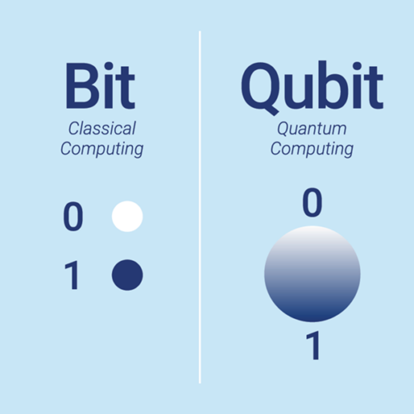
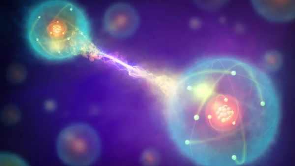
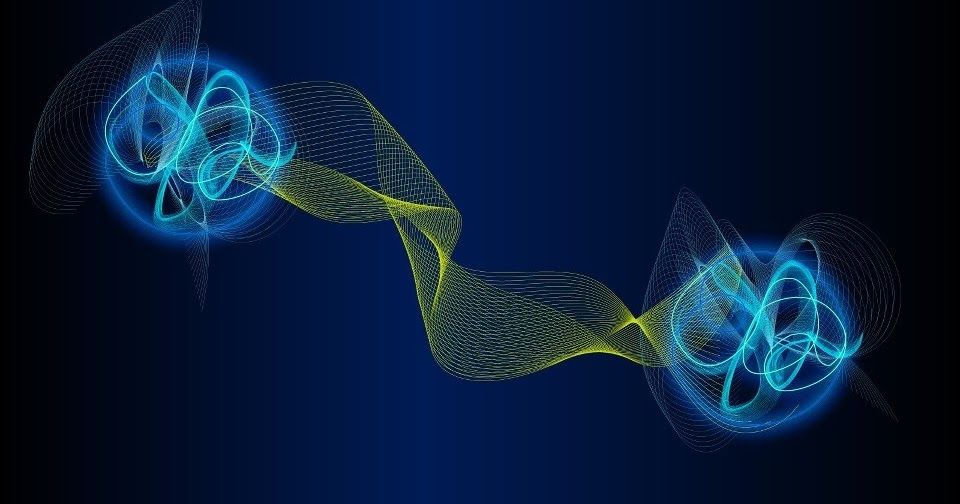

Um bit clássico funciona como uma moeda parada — ou é 0 (cara) ou 1 (coroa). Já o qubit é como uma moeda girando no ar — pode representar 0, 1 ou ambos ao mesmo tempo.
Essa característica permite que computadores quânticos processem múltiplas possibilidades simultaneamente, tornando-se muito mais poderosos.

A superposição permite que um qubit represente vários estados ao mesmo tempo, enquanto o emaranhamento conecta qubits de forma única.
Essa conexão faz com que o estado de um qubit influencie o do outro — mesmo separados por grandes distâncias. Isso cria uma coordenação paralela extremamente poderosa.

A interferência quântica funciona como um filtro que reforça os resultados corretos e cancela os incorretos.
Esse princípio ajuda os computadores quânticos a encontrarem respostas precisas e eficientes, reduzindo o tempo de cálculo e o erro nos resultados.

2025 © Todos os Direitos Reservados. Design adaptado por Renan Moia.